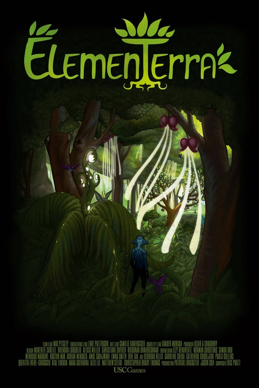
ElemenTerra is a fully-immersive virtual reality sandbox game that was originally created as an Advanced Game Project at the USC School of Cinematic Arts. Now, the good folks over at Visionary VR are continuing its development. Players embody a nature spirit sent to a tiny, desolate planet for the sole purpose of giving it the gift of life.
Because it requires a unique and cutting edge combination of peripherals, ElemenTerra was not designed for mass-market appeal. Rather, the game was designed from the ground up as an installation piece.
ElemenTerra has been exhibited at several independent gaming and VR conventions such as VRLA. After the festival circut, we hope to permantly install the game in a gallery space at the University of Southern California School of Cinematic Arts.
ElemenTerra is a research venture. Our team was fortunate that we had been given the opportunity to develop a fully immersive game with no obligation to be commercially viable. During development, our team openly shared our problems and solutions to empower other developers and designers creating games for virtual reality.
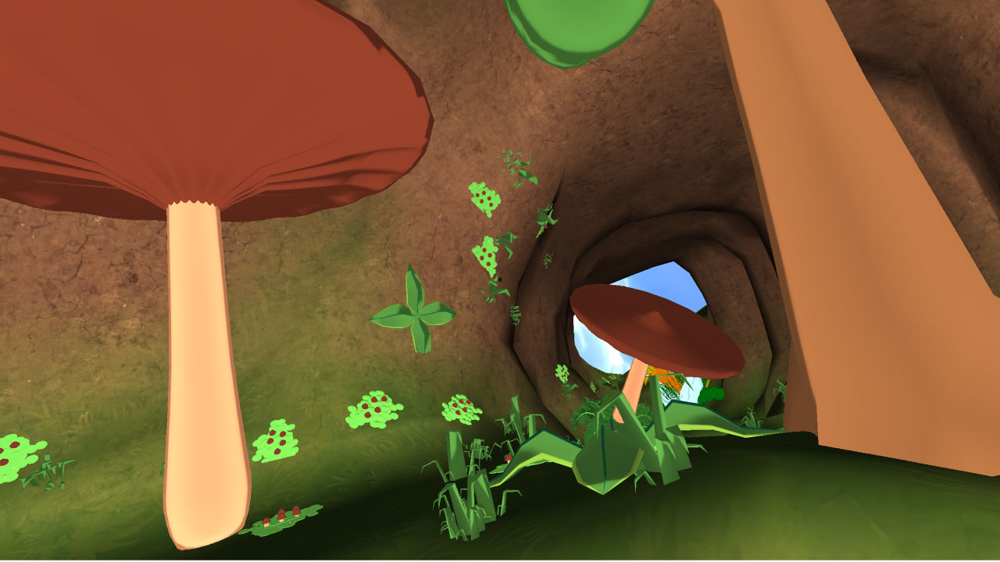
I sort of felt like a supernatural Bob Ross. — Giancarlo Valdes
As a game designer, I helped prototype control systems, design tutorial sequences and author the logic of the game's ecosystem.
We wanted to create a fully immersive experience that utilizes three new virtual reality peripherals: the Oculus Rift, the Sixense STEM and the Virtuix Omni. Even though we were using new techology, we didn't want this to just feel like another virtual reality tech demo. Every technical decision we made in the game had to support the experience goals for our player. We wanted our players to experience:
One of the most interesting problems I got to work on while designing ElemenTerra was the control system. We had originally intended on using the Razer Hydra for tracking upper body position in 3D space and using the Virtuix Omni, an omni-directional treadmill, to control traversal.
Unfortunately, our Virtuix Omni never arrived, so we had to work on mapping all of the controls onto the Razer Hydra. To determine the best way to do that, we first determined the affordances of the control system.
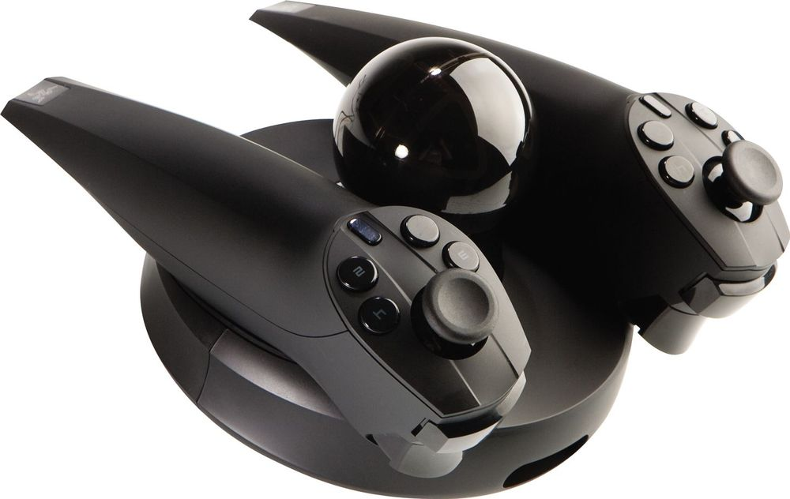
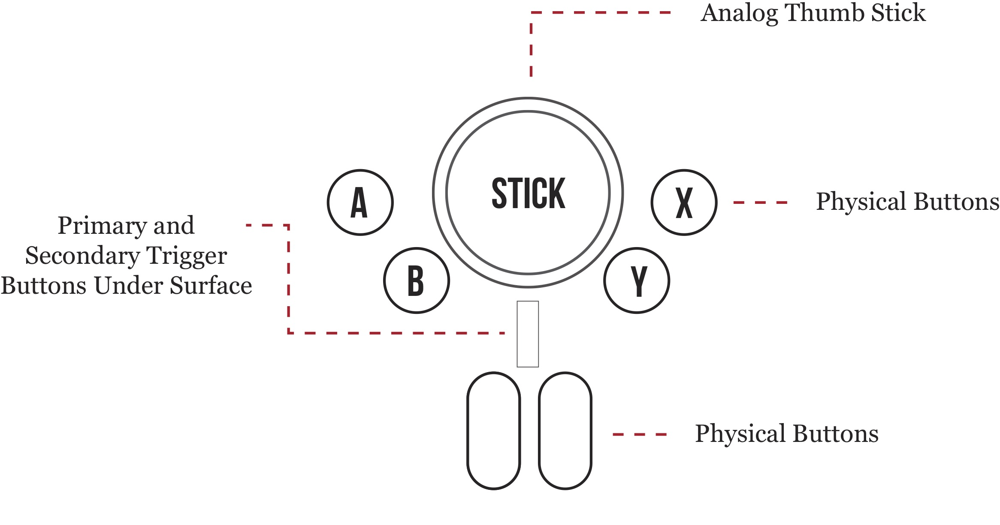
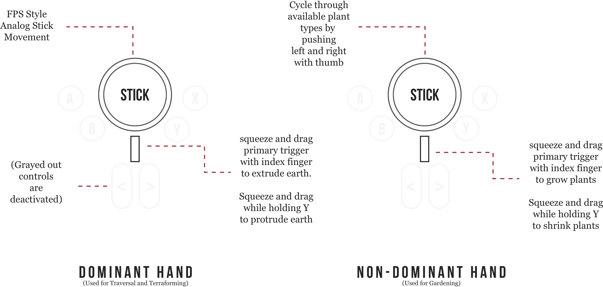
Because we knew that our audience of players would be mostly gaming journalists and early adopters, originally we felt pretty confident in our choice to map First Person Shooter-style movement controls to the main joystick.
After working with the engineering team to create a build with this control scheme, we organized a playtest through our Usability testing coordinator, Xander Morgan. He recruited playtesters to come to the lab, and recorded their sessions.
For months, our playtesters would report that they felt sick when using our game. This "simulation sickness" is one of Virtual Reality's biggest (and most widely reported) problems. Our players couldn't enjoy the experience of the game because at a very deep level, moving around in the game made them sick enough to no longer want to play.
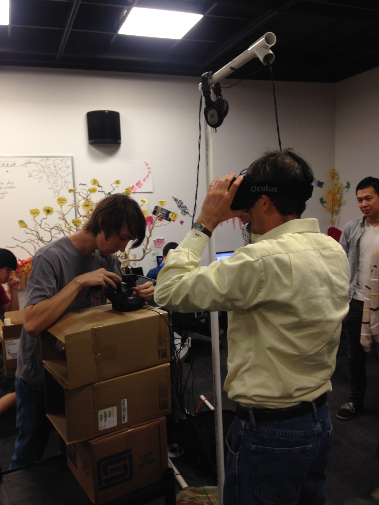
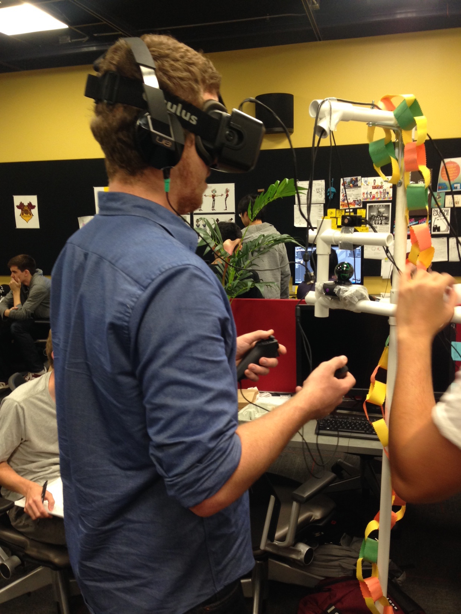
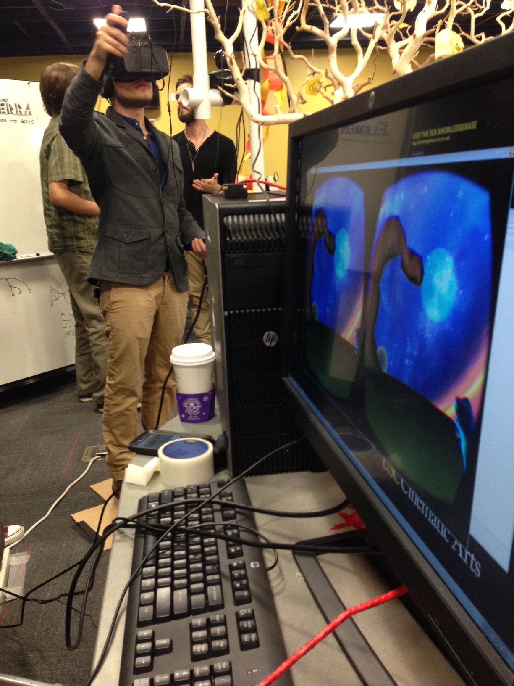
Over the next few months, we continuously iterated with different control schemes that mapped motion in different ways. The only way to see which of these helped players feel less sick was to prototype and test often with real playtesters.
At the conclusion of the first semester of the project, and many hours spent testing and tweaking, we finally established a control system that felt great and didn't make our players sick! We learned a lot of small things about designing for VR, but two of the biggest takeways for me personally are:
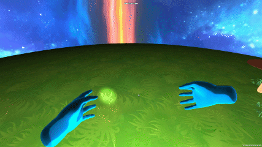
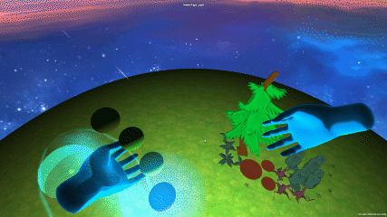
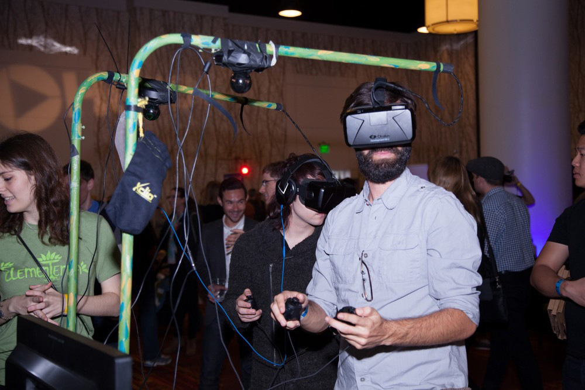
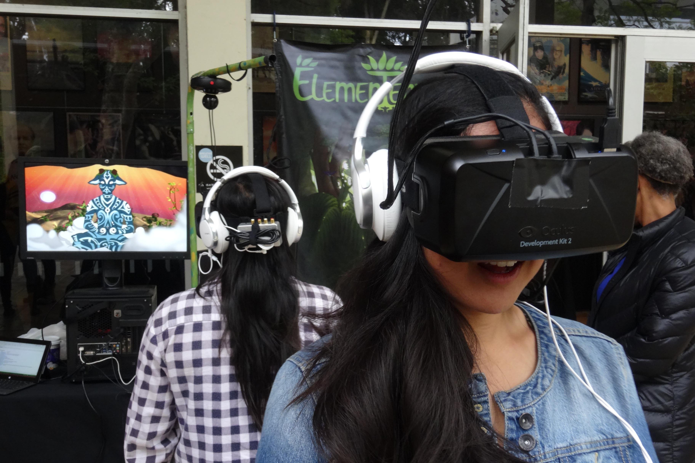
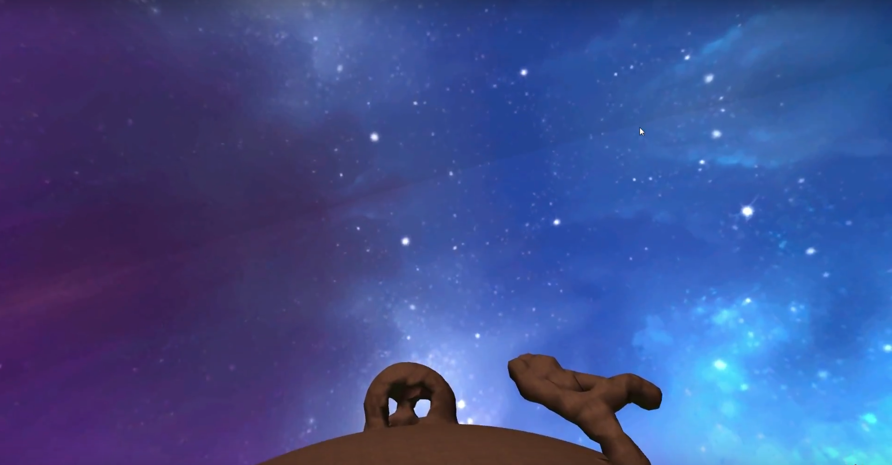
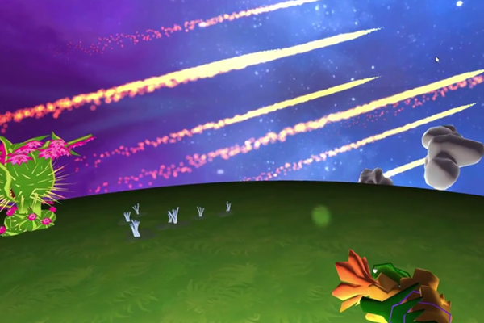
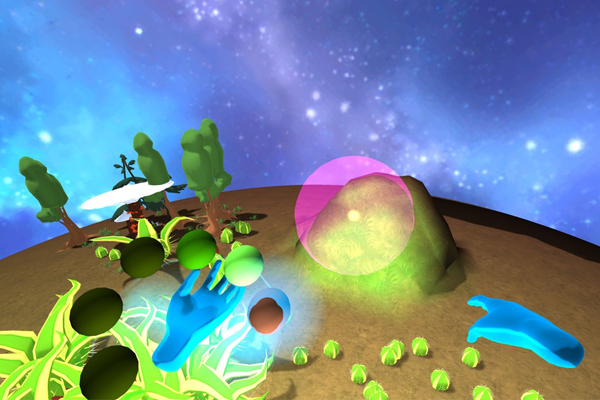